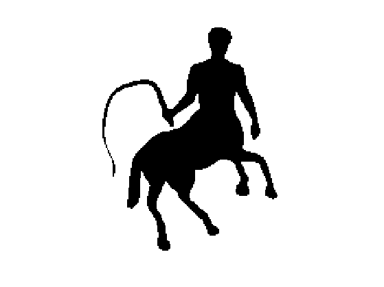
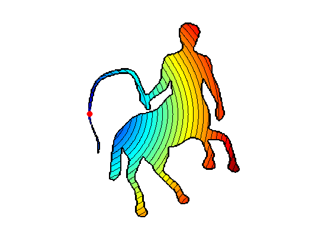
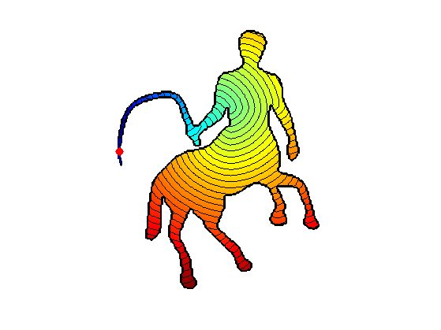
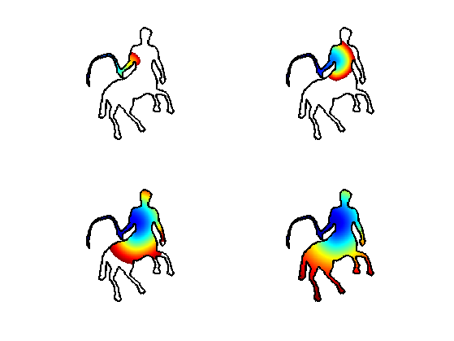
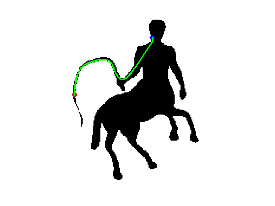
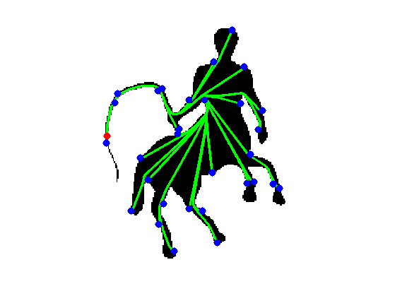
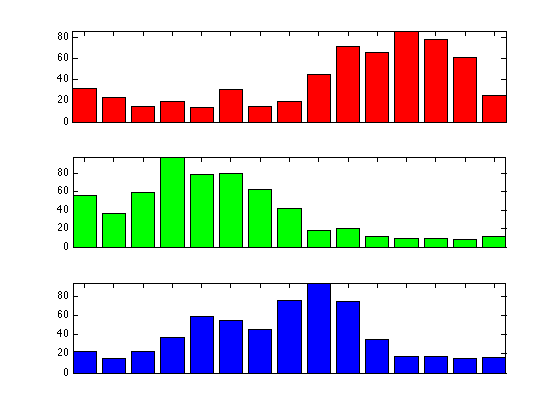
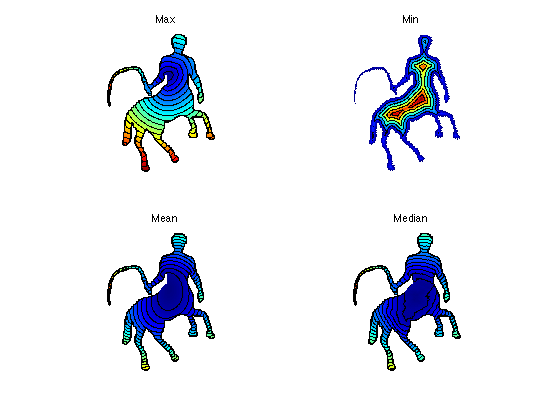
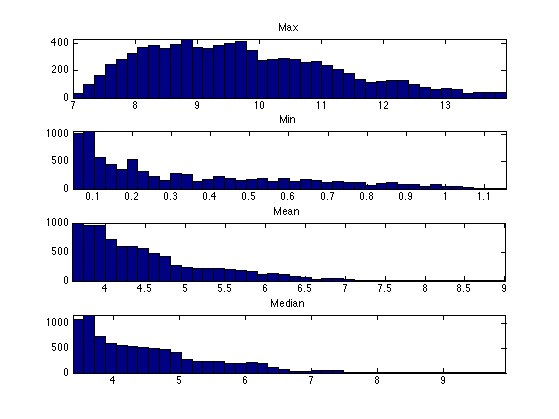

Shape Retrieval with Geodesic Descriptors
This numerical tour explores the use of geodesic distances within shapes to perform shape retrieval.
Contents
This tour is mostly inspired from the following work:
Matching 2D and 3D Articulated Shapes using Eccentricity, A. Ion, N. M. Artner, G. Peyre, W. G. Kropatsch and L. Cohen, Preprint Hal-00365019, January 2009.
Installing toolboxes and setting up the path.
You need to download the following files: signal toolbox, general toolbox and graph toolbox.
You need to unzip these toolboxes in your working directory, so that you have toolbox_signal, toolbox_general and toolbox_graph in your directory.
For Scilab user: you must replace the Matlab comment '%' by its Scilab counterpart '//'.
Recommandation: You should create a text file named for instance numericaltour.sce (in Scilab) or numericaltour.m (in Matlab) to write all the Scilab/Matlab command you want to execute. Then, simply run exec('numericaltour.sce'); (in Scilab) or numericaltour; (in Matlab) to run the commands.
Execute this line only if you are using Matlab.
getd = @(p)path(p,path); % scilab users must *not* execute this
Then you can add the toolboxes to the path.
getd('toolbox_signal/'); getd('toolbox_general/'); getd('toolbox_graph/');
Geodesic Distances Within a Binary Shape
By restricting shortest path to lie within a shape, one create a geodesic metric that is different from the Euclidean one if the shape is not convex.
A binary shape is represented as a binary image.
n = 200; name = 'centaur1'; M = load_image(name,n); M = perform_blurring(M,5); M = double( rescale( M )>.5 ); if M(1)==1 M = 1-M; end
Display the shape.
clf; imageplot(-M);
Compute its boundary
bound = compute_shape_boundary(M); nbound = size(bound,2);
Parameters for the Fast Marching: constant speed W, but retricted using L to the inside of the shape.
W = ones(n); L = zeros(n)-Inf; L(M==1) = +Inf;
Initial point for the geodesic computation.
start_points = [95; 20];
Compute the geodesic distance without constraint using Fast Marching. It is simply the Euclidean distance.
options.constraint_map = []; D0 = perform_fast_marching(W, start_points, options); D0(M==0) = Inf;
Display Euclidean distance.
clf; options.display_levelsets = 1; options.pstart = start_points; options.nbr_levelsets = 30; display_shape_function(D0, options);
Compute the geodesic distance with constraints using Fast Marching.
options.constraint_map = L; D = perform_fast_marching(W, start_points, options);
Display geodesic distance.
clf; options.nbr_levelsets = 60; display_shape_function(D, options);
Exercice 1: (check the solution) Using options.nb_iter_max display the progression of the Fast Marching.
exo1;
Compute a geodesic curve.
end_points = [27;112]; p = compute_geodesic(D,end_points);
Display the path.
ms = 30; lw = 3; clf; hold on; imageplot(1-M); h = plot(end_points(2),end_points(1), '.b'); set(h, 'MarkerSize', ms); h = plot(start_points(2),start_points(1), '.r'); set(h, 'MarkerSize', ms); h = plot( p(2,:), p(1,:), 'g' ); set(h, 'LineWidth', lw); axis ij;
Exercice 2: (check the solution) Compute curves joining the start point to several points along the boundary.
exo2;
Local Geodesic Descriptors
In order to build shape signatures, we compute geodesic distance to all the points on the boundary. We then retrieve some caracteristics from these geodesic distance map.
Select a uniform set of points on the boundary.
nb_samples = 600; sel = round(linspace(1,nbound+1,nb_samples+1)); sel(end) = []; samples = bound(:,sel);
Exercice 3: (check the solution) Build a collection E of distance maps, so that E(:,:,i) is the geodesic distance to samples(:,i).
exo3;
normalize distances.
E = E/mean(E(:));
Display some locations
points = [[80;20] [95;112] [156;42]];
col = {'r', 'g', 'b', 'k'};
clf; hold on;
imageplot(-M);
for i=1:3
h = plot(points(2,i), points(1,i), [col{i} '.']);
set(h, 'MarkerSize', 40);
end
axis('ij');

Display three different features at some locations.
clf;
col = {'r', 'g', 'b', 'k'};
for i=1:3
subplot(3,1,i);
d = E(points(1,i),points(2,i), :);
u = hist(d(:), 15); axis tight;
h = bar(u, col{i}); axis('tight');
set(gca, 'XTickLabel', []);
end
 Global Geodesic Descriptors
One can retain a single statistic from the local descriptors, such as the min, max, mean or median values. The histogram of these values are the global descriptors.
Compute several statistics.
clear A; A{1} = max(E,[],3); A{2} = min(E,[],3); A{3} = mean(E,3); A{4} = median(E,3); titles = {'Max', 'Min', 'Mean', 'Median'};
Display as images.
nbr = [20 5 30 30]; options.pstart = []; clf; for i=1:4 subplot(2,2,i); options.nbr_levelsets = nbr(i); display_shape_function(A{i}, options); title(titles{i}); end colormap jet(256);
Display histograms of the statistics.
clf; for i=1:4 u = A{i}(M==1); u = u(u>0); subplot(4,1,i); hist(u, 40); axis('tight'); title(titles{i}); end
Shape Retrieval using Geodesic Historams.
One can use the histograms of Eccentricity for shape retrieval.
Exercice 4: (check the solution) Load a library of shapes. Compute the different histograms for these shapes.
exo4;
Exercice 5: (check the solution) Perform the retrieval by comparing the histogram. Test diffetent metrics for the retrieval.
exo5;